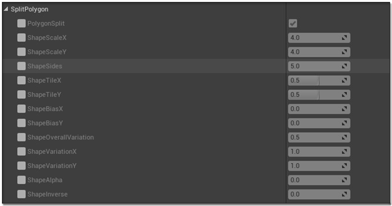

Art of Shader Documentation
Although the Post Process Blendable Materials and their corresponding instances coming with every Art of Shader pack can be used in a Post Process Volume seperately placed in your level, there are Blueprint Actors specifically created to make several steps easy and more user friendly. This documentation is going to walk you through how to use the Blueprint Actors in your level and get the most out of the AOS Packs.
Introduction
Before getting started implmeneting post processing in our environment, it is important to get ourselves acquainted with some of the basic concepts behind post processing as well as terminologies which form integral part in the AOS Series.
What are Blendables?
Blendables are Post Process materials that add custom Post Process Effect to your overall scene. Blendables are usually added in a Post Process Volume Actor, in the PostProcessMaterials array. Multiple Blendables can be added and given different weightage between 0 and 1 to combine their effects accordingly.
More information on Blendables can be found in the below link :
https://docs.unrealengine.com/en-US/Engine/Rendering/PostProcessEffects/Blendables/index.htmlLocalization
Localization is a technique of adding Post Process Materials in the level, so that it affects only part of the level, and not the entire scene. For example, you have a CelShaded Material, and you do not want the entire scene to have the effect, when you apply the same in your level, but rather a few objects, or a part of the screen. For this, you need to use Localization. In my shader packs, I have used two types of Localization, Object Space Localization, using Custom Depth Stencil, and Screen Space Localization, using displaced UVs.
Types of Shaders
The Shaders can be differentiated into three types, based on the type of environment it affects.
-
The MainShaders affect objects at a navigable distance, i.e not very far away from you.
-
The BackgroundShaders affect background objects, like Sky and Atmosphere.
-
The CommonShaders affect the entire scene.
Getting Started
Each Art of Shader Pack will come with a few Blueprint Actors, Widget Blueprints for Runtime Controls including a ColorPicker, few textures and a bunch of Post Process Blendable Materials, their corresponding Material Instances, and relevant Material functions used by those Materials. The Common files like the Blueprints, the WidgetBlueprints, Assets for Demonstration, etc, will have the same folder names across all the AOS packs, making it easy to integrate and merge multiple packs in same project. But the Blendable Materials and Instances specific to the given pack will have their own folder, like Stylized Post Process Materials will be present inside the folder called StylizedPostProcess.
The Tutorial Blueprints
Tutorial Blueprints will walk you through the various classes, variables and functionalities, with detailed description and usefulness of each and every property that you need to know about. The Tutorial Blueprints will be found inside the Tutorials folder.
The AOS Actor
The AOS Actor, named as BP_ArtOfShader, is an Actor Blueprint, found inside the Blueprints folder, which seperates out the MainShaders, BackgroundShaders and the CommonShaders. These properties are exposed and can be set in your BP instance. These will let you group the materials based on the set of common properties you choose, like Localization and Blending.
| Properties | Description |
|---|---|
| MainShaders | Array of properties derived from the structure called UDS_PostProcessMainShader, and is responsible for applying MainShaders to the current scene. |
| BackgroundShaders | Array of properties derived from the structure called UDS_PostProcessCommonShader, and is responsible for applying BackgroundShaders to the current scene. |
| CommonShaders | Array of properties derived from the structure called UDS_PostProcessMainShader, and is responsible for applying CommonShaders to the current scene. |
| IsUnBound | True if the Post Process Volume being applied through the AOS Actor is infinitely extent(UnBound), false if it is bound to the area covered by the given volume. |
Every array element specific to MainShaders and CommonShaders are derived from a structure called UDS_PostProcessMainShader, and each of these element represent a single group of Post Process Materials that can be blended together via a set of common parameters.
| Properties | Description |
|---|---|
| Materials | Array of Post Process Blendables Material Instances. |
| Blend | An amount between 0 to 1, and defines how much every Instances defined in the Materials array should blend. |
| Localized | Set to true if the current group of Post Process Materials should have their localization enabled. If enabled, the Materials will not affect the entire scene and the effect will be determined by the localization parameters set. The shader will be applied to only those objects in the scene for which the stencil index falls within the StencilMinIndex and StencilMaxIndex parameters. |
| Exclude Stencil | For Object Space Localization, when ExcludeStencil is checked, the localization effect is reversed, i.e, it is applied to the rest of the scene whose sencil value falls within the StencilMinIndex and StencilMaxIndex parameters. |
| StencilMinIndex | An Integer value between 0 and 255, which represent the minimum stencil index for the range of Stencil values for which the localization should take place, when Localized variable is checked. |
| StencilMaxIndex | An Integer value between 0 and 255, which represent the maximum stencil index for the range of Stencil values for which the localization should take place, when Localized variable is checked. |
| Split Screen Params | A variable defined by the structure |
BP_ArtOfShader is what you are going to need the most to develop the Post Process Effects for your own environment.
To get started with, place an instance of BP_ArtOfShader in your level.
To populate your main environment, create an element in the MainShaders array in the instance of the BP_ArtOfShader you placed in your level. This element will represent a single group of Post Process Materials having common Localization and Blending properties.
In the Materials array, create an array element, and assign a Post Process Material instance from the corresponding folder, i.e., if you have purchased the Stylized Post Process Pack, then the Material Instances will be found at StylizedPostProcesses/MaterialInstances.
Now you can see that the corresponding Post Process Material has been applied on your main environment. You can add more elements in the Materials array to combine multiple Blendables together, although not all of them will look equally good when combined with one another, so a lot of factors will come into play, and we will learn more about them as we progress.
You can change the Blend value from 0 to 1, where 0 being no effect of the material(s) in the scene, while 1 means full effect. Blend happens through linear interpolation, and is different than the weight blended system present in the Post Process Volume Actor.
To populate your background environment, which mainly consists of the sky, create an element in the Background Shaders array in the instance of the BP_ArtOfShader you placed in your level. Just like how added Materials and set the blend value in the MainShaders array, you can similarly do the same and see the effect occuring in your Sky and Atmosphere instead, keeping your Main Environment as it is.
Please note, for some reason unknown to me, it is not possible to have Material Instances derived from the same Material to simultaneously affect both your Main and your Background environment. So, if that is what you desire, it is advisable to duplicate the parent Material and create another instance out of it.
Common Shaders, that will affect the entire scene, are created similarly, by adding elements in the CommonShaders array.
As you have already realized by now, you can easily combine and group and blend multiple Blendables to get the desired look of your environment.
The AOS Runtime Actor
The AOS Runtime Actor, named as BP_AOSRuntime, is an Actor Blueprint, also found inside the Blueprints folder, which can have only one set of Post Process Materials, grouped by Common Properties. This is because BP_AOSRuntime was mainly created for demonstration of various shaders, and the instance parameters, along with properties like Localization and Blending, in runtime.
The AOS Runtime Manager
The AOS Runtime Manager, named as BP_AOSRuntimeManager, is an Actor Blueprint, also found inside the Blueprints folder, which gets reference of all the instances of BP_AOSRuntime placed in the level, and brings the appropriate UI settings, when a user steps inside the volume of a given BP_AOSRuntime. An example of this in action is found in the Levels found inside the Map folder.
The AOS User-Defined Runtime Actor
The AOS User-Defined Runtime Actor, named as BP_AOSUserDefinedRuntime, is an Actor Blueprint, also found inside the Blueprints folder, which needs a reference of an instance of BP_ArtOfShader placed in the level. It then reads the Post Process Materials currently applied via BP_ArtOfShader, and during runtime, we can manually control when the UI should pop up, and we can tweak the Post Proces Settings accordingly. BP_AOSUserDefinedRuntime contains detailed commented example for the same.
Working with Localization
Assuming you are able to get yourself familiar with the contents of the AOS Packs, we can now look into implementing Localization in our environment.
Object Space Localization
Object Space Localization (OSL) happens through Custom Depth Stencil. In this technique, it is possible to selectively apply Post Process Materials only to certain objects placed in the scene, and not the entire scene, or to exclude certain objects from the effect of a given Post Process Materials that is applied to the rest of the scene.
To use OSL, first you need to Enable Stencil Depth for your project. To do this, go to Edit -> Project Settings, search for Custom Depth, and then set Custom Depth-Stencil Pass to Enabled with Stencil. Also ensure that the property Custom Depth with TemporalAA Jitter is checked.

For the objects placed in the scene that need to get affected by the given Post process materials, set Render Custom Depth Pass to true, and for the property Custom Depth Stencil Value, set a value between 0 and 255.
When the Stencil values of the objects in the scene is set, those objects are now ready for Localization. To enable localization from your BP_ArtOfShader instance placed in the level, set the Localized property to true for one of the elements you created in either MainShaders, or CommonShaders. Also you need to set the StencilMinIndex and StencilMaxIndex appropriately, so that the Stencil values of the objects being affected by the given Post Process effect falls between StencilMinIndex and StencilMaxIndex. For example, if you StencilMinIndex is 250 and StencilMaxIndex is 255, all the objects in the scene having custom depth enabled and Stencil values between 250(inclusive) and 255(inclusive) will be affected when Localized is set to true, while the rest of the scene will be as it is.
To reverse the effect of Object Space Localization, set ExcludeStencil parameter to true. This will disable the post process effect from the objects whose Stencil Values fall between StencilMinIndex and StencilMaxIndex, while enabling the effect for the rest of the scene, depending on if the current change is made to MainShaders, or CommonShaders
Screen Space Localization
Screen Space Localization(SSL) applies Post Process effect to only part of the screen, and not the entire screen. This is done by selectively choosing certain UVs and neglecting others via various conditional statements.
SSL can be divided into Simple SSL and Advanced SSL. Simple SSL can be activated directly from the BP_ArtOfShader instance placed in the level, from the SplitScreenParams structure variable that you find at each element in the MainShaders, BackgroundShaders or CommonShaders.
| Properties | Description |
|---|---|
| SplitScreen | Setting this to true will enable the Screen Spacle Localization. |
| SplitRatio | Overall Ratio of the Screen Split. |
| SplitX | Ratio of the Screen Split in the X Direction. |
| SplitY | Ratio of the Screen Split in the Y Direction. |
Advanced SSL is a technique of splitting the screen via Polygonal Shape, which can be Rectangles, Circle, or an N-Side Polygon with some customization options to create some interesting shapes. Advanced SSL is not exposed to AOS Actor, but can be created on top of the existing functionalities, by visiting the respective Material Instance Editor, and modifying the corresponding parameters.
When the PolygonSplit parameter is enabled, you will see the parameters respective to changing the shape , size and position of the polygon as required.
When the PolygonSplit parameter is disabled, you will see the parameters respective to changing the shape, size and position of either a Rectangle, or a Circle. The transformation from Rectangle to Circle is determined by the float parameter CircleAlpha.